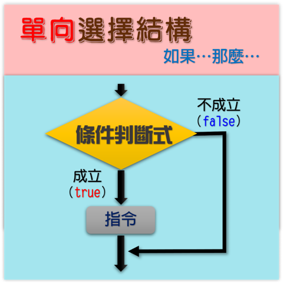
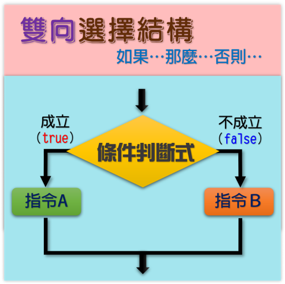
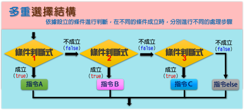

|
|
|---|
 選擇結構
選擇結構
「選擇結構」主要是用在需要進行邏輯判斷的情况下，控制程序執行的路徑。就像鐵路上的分道閘，可以控制火車走這條線路，也可以控制火車走那條線路。簡單的說，就是依據不同條件的判斷結果，選擇不同的步驟來執行。
而當你要面對選擇時，就須有一個強而有力的理由，這個理由就是所謂的「條件判斷」。在程式語言中，如果是面對這種程式執行路徑需要抉擇的問題，可以用「選擇結構」來處理。「選擇結構」是一種利用條件判斷敘述來選擇程式執行路徑的程式結構。
這種結構常用於邏輯判斷、大小關係比較等條件判斷的應用。在Scratch中的〈如果...那麼...〉積木、〈如果...那麼...否則...〉積木就是典型的選擇結構，而前者是『單向選擇結構』，後者是『雙向選擇結構』。
在使用時需要爲它設置一個條件，這個條件可以用「等於」、「小於」、「大於」這樣的關係運算子，也可以用「且」、「或」、「不成立」這樣的邏輯運算子來設置。
📌選擇結構之流程圖：「選擇結構」的情境基本上可分為三種，除了前面提到的單向選擇結構、雙向選擇結構外，還有多重選擇結構。
🎯單向選擇結構：只定義了條件成立時要執行的敘述。依據設立的條件判斷式進行判斷是否成立，若成立（True）時，就執行該指令；反之，若不成立（False）時，則跳過該指令直接往下執行。

🎯雙向選擇結構：分別定義了條件成立與條件不成立時要執行的敘述。依據設立的條件進行判斷是否成立，若成立（True）時，就執行條件成立下的指令Ａ；反之，若不成立（False）時，則執行條件不成立下的指令Ｂ。
🎯多重選擇結構：串接了數個雙向選擇結構，依據設立的條件進行判斷，在不同的條件成立時，分別進行不同的處理步驟。

